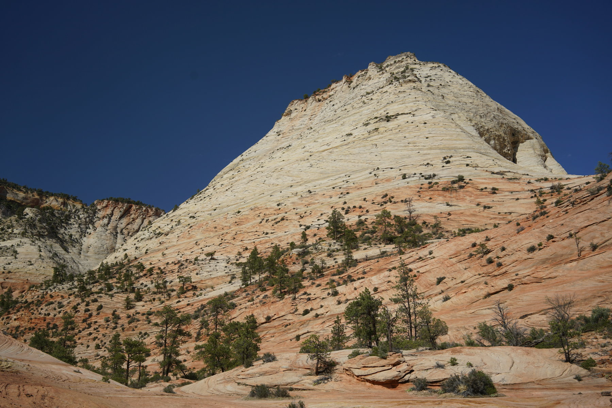
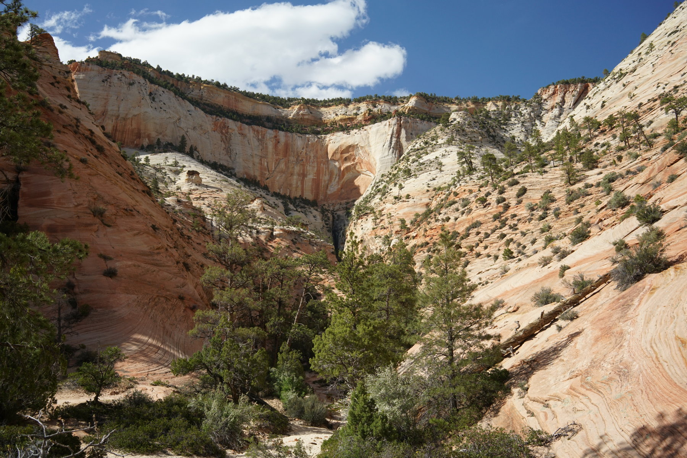
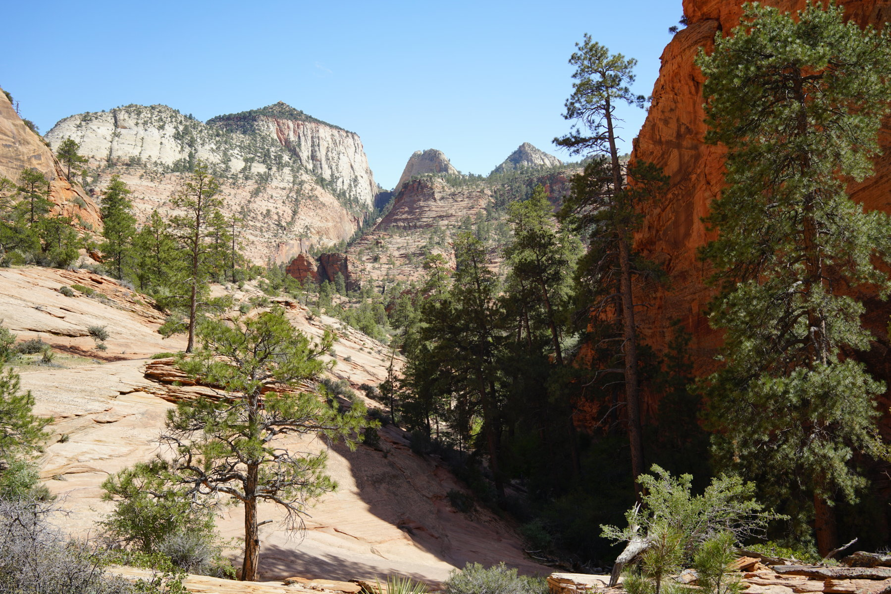
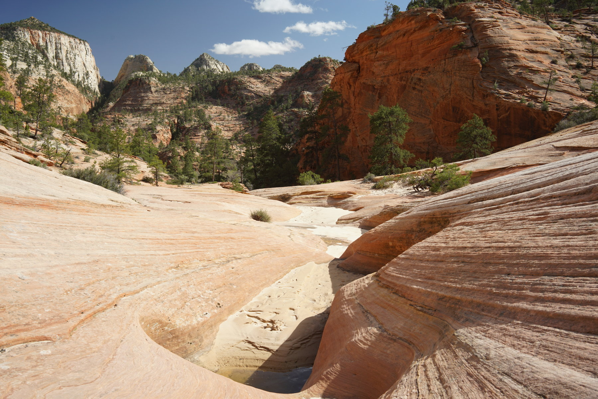
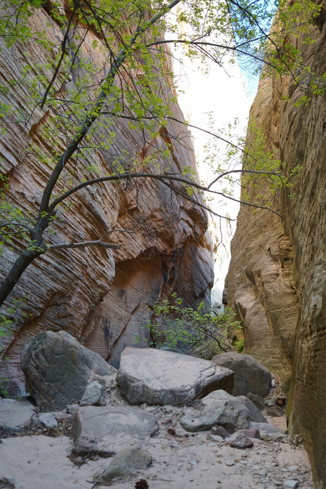
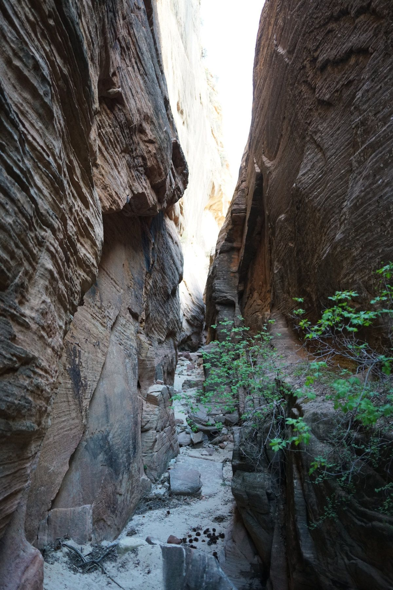
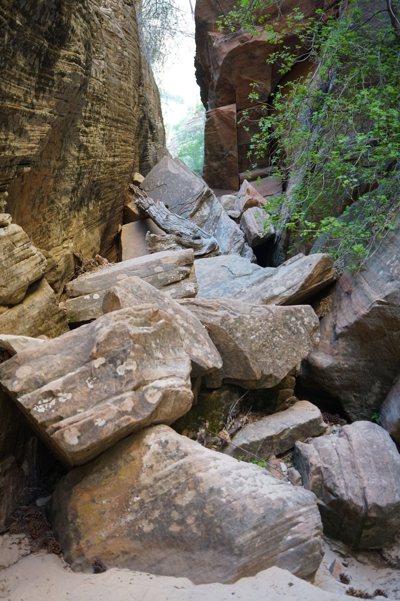
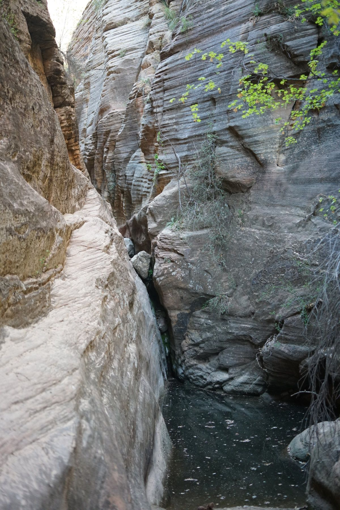

4 /2 7 /2 5 - East Zion Slot

The landscape opened up aAfter a very short 5 minute walk through a canyon. There is a small slot that I headed towards, center of photo

Looking back

Some small water pools



Some boulder obstacles to climb over

I turned back here. The water was at least 6 ft deep and cold. There was a ledge on the left but it was covered with a layer of sand, and there were hardly any handholds. A small slip, which was likely, would mean a very cold bath and was not desirable.
